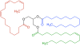

lipolysis

Definition: Lipolysis is the metabolic pathway through which lipid triglycerides are hydrolyzed into a glycerol and free fatty acids. It is used to mobilize stored energy during fasting or exercise, and usually occurs in fat adipocytes. The most important regulatory hormone in lipolysis is insulin; lipolysis can only occur when insulin action falls to low levels, as occurs during fasting. Other hormones that affect lipolysis include glucagon, epinephrine, norepinephrine, growth hormone, atrial natriuretic peptide, brain natriuretic peptide, and cortisol.
Source: Wikipedia
Wikipedia Page (Something wrong with this association? Let us know.)
Wikidata Page (Something wrong with this association? Let us know.)